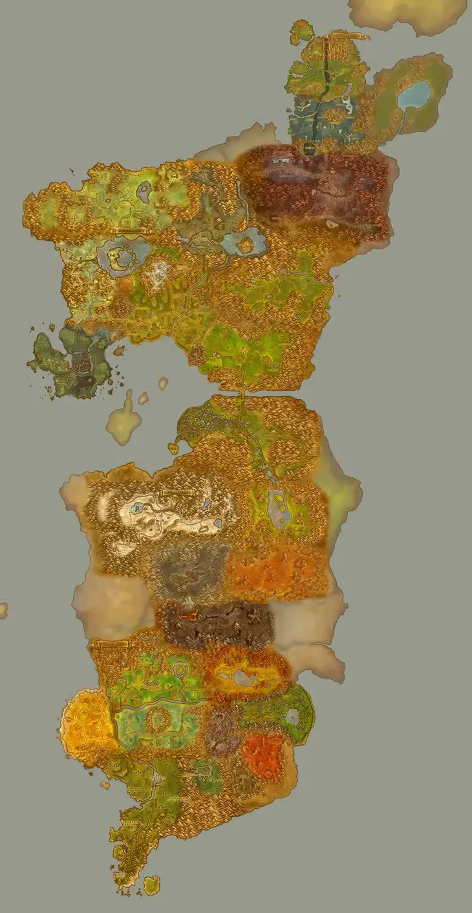

LDAZEROTH RUN
LORE DIFF · TOUS LES JEUX
Changer de jeu
UNIVERS 01 // WORLD OF WARCRAFT
CONNAIS-TU
CONNAIS-TU
AZEROTH ?
Place une zone sur la carte, reconnais une voix, démasque un intrus. Douze épreuves, trois étapes : le défi monte au fil du voyage.
190+ QUESTIONS ACTIVES
≈10 QUESTIONS / FORMAT
12 ÉPREUVES · FORMATS EN ROTATION
QUATRE FAÇONS DE JOUER
- 01RECONNAÎTREPersonnages, créatures, emblèmes.
- 02EXPLORERPlace une zone. Retrouve un lieu.
- 03DÉDUIRERelie les indices. Trouve l’erreur.
- 04ÉCOUTERUne voix, un thème : à toi de jouer.
ÉPREUVE 01 / 12PERSONNAGE
20SEC
ARCHIVE?
DOSSIER PERSONNAGE
RÉPLIQUES EN VERSION ORIGINALE

CLIQUE POUR PLACER TON MARQUEUR
IDENTIFICATION VISUELLE
Qui est ce personnage ?
CORRECTVOIR LA SOURCE ↗
RANGA